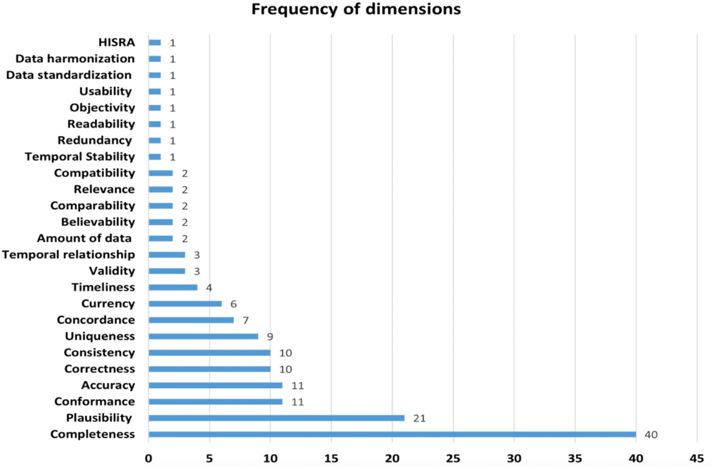

Data visualization for exploratory data analysis and data quality
Lesley Chapman Hannah, Ph.D., M.S.
College of Graduate Studies
Northeast Ohio Medical University
Overview
Discuss the role of exploratory data analysis (EDA) in biomedical research
Common sources of structure and error in biomedical data
Data quality considerations relevant to biomedical research
Data Visualization and Exploratory Data Analysis (EDA)
Exploratory Data Analysis (EDA) is the phase of analysis in which scientists interactively explore data to uncover structure, patterns, anomalies, relationships, and generate hypotheses before formal modeling or testing
- EDA informs decisions about variable inclusion, transformation, stratification, and modeling strategy
Data Visualization and Exploratory Data Analysis (EDA)
EDA answers questions such as:
- What values does this variable actually take?
- How were values generated?
- Are observed patterns biological, procedural, or erroneous?
- Which parts of the data are usable for a given analysis?
Data Visualization and Exploratory Data Analysis (EDA)
Scientists use data visualization in EDA to:
- Reveal structure and patterns invisible to simple statistics
- Detect anomalies and support hypothesis generation
- Guide subsequent modeling and confirmatory analysis
- Understand relationships, group effects, and high-dimensional structure
EDA Process
- Identify anomalies (outliers, missing data)
- Transform variables (logs, standardization) and re-plot
- Hypothesis formation based on patterns
- Feature selection/engineering guided by visual insights
Data Visualization Goals in Exploratory Data Analysis
Data visualizations in EDA are chosen based on the type of insight sought:
- distribution — identify skewness, multi-modality, and outliers
- correlation/Association — detect relationships, linearity, and clusters
- comparison across groups — compare distributions or summary measures
- structure in high dimensions — find latent clusters or separations
- temporal patterns — detect trends and seasonality (via line plots/heatmaps)
Data Quality
- the concept of data quality emerged in the 1950s in manufacturing and later expanded to service domains, including healthcare\(^{1}\)
- despite widespread use, no universally accepted definition of data quality exists,definitions are context-dependent
Data Quality - Common Sources of Error in data
- Biomedical datasets are shaped by clinical workflows, laboratory protocols, reimbursement systems, and institutional practices. Observed values reflect both biological processes and operational constraints. As a result, distributions often contain implausible values, structural zeros, truncation, or site-specific patterns
- visualization enables rapid identification of unexpected structure and inconsistencies in high-volume datasets
- EDA is the process of determining how biomedical data behave before deciding how to analyze the data
Common sources of error in biomedical data
- biomedical data quality assessment concentrates on missing and obviously implausible values
- other classes of errors—misclassification, inconsistency, duplication, and temporal misalignment are less common but have a significant impact on downstream analysis
Common sources of error in biomedical data
- Hosseinzadeh et al. examined how biomedical and healthcare datasets are evaluated for data quality across the literature

Hosseinzadeh et al. BMC Med Inform Decis Mak. 2025 Aug 9;25:296.
Common sources of error in biomedical data
Common Sources of Error within datasets:
- completeness:
- missing values at the variable, record, or cohort level
- values are often easy to quantify with histograms and barcharts
- plausibility:
- values that are present but biologically or logically impossible
- data entry errors (i.e.: impossible ages)
Hosseinzadeh et al. BMC Med Inform Decis Mak. 2025 Aug 9;25:296.
Common sources of error in biomedical data
Common Sources of Error within datasets:
- conformance:
- non-adherence to standards or expected formats
- e.x.: invalid ICD codes
- accuracy:
- values that do not reflect the true underlying state
- e.x.: incorrect lab results - may require external ground truth
Hosseinzadeh et al. BMC Med Inform Decis Mak. 2025 Aug 9;25:296.
Data Quality
- Data quality has been described as:
- ability of an information system to accurately represent real-world states (Wand, 1996) \(^{2}\)
- extent to which data has sufficient depth, breadth, and scope to support intended tasks (Wang, 1996) \(^{3}\)
- Wang’s framework organizes data quality into four dimensions:
- intrinsic, contextual, representational, and accessibility
- Dimensions determine whether healthcare data is fit for its intended use
Key Dimensions of Data Quality
intrinsic quality: correctness of the data; can we believe the data? (i.e.: negative lab values, impossible vitals)
contextual quality: whether data are appropriate for a specific task or analytic goal;fitness-for-use
- data may be accurate yet inadequate if they are incomplete, outdated, or insufficiently granular for the intended use
Key Dimensions of Data Quality
representational quality: how data are structured, formatted, and described
- data are consistently encoded, clearly labeled, and interpretable by both humans and machines
- plots help check for artifacts like: ambiguous variable names, inconsistent units, or unclear coding
accessibility quality: whether data can be obtained and used when needed by authorized users
Summary
- sources of error in biomedical data
- biomedical data are shaped by laboratory, and institutional workflows these pipelines could lead to systematic patterns of error that must be identified before formal analysis
- exploratory data analysis (EDA) is one of the primary mechanism by which scientists detect anomalies and limitations in biomedical datasets
- many classes of errors within datasets, with data completeness as being one of the most common sources of error
- data quality is assessed through visualization-driven exploration that reveals how data are structured and informs how this might impact downstream biological conclusions
References
- Hosseinzadeh, E., et. al. Data quality assessment in healthcare, dimensions, methods and tools: a systematic review. (2025) 25:296.
- Wand Y, Wang RY. Anchoring data quality dimensions in ontological founda- tions. Commun Of The ACM. 1996;39(11):86–95.
- Wang RY, Strong DM. Beyond accuracy: What data quality means to data consumers. Journal Of Management Information Systems. 1996;12(4):5–33.